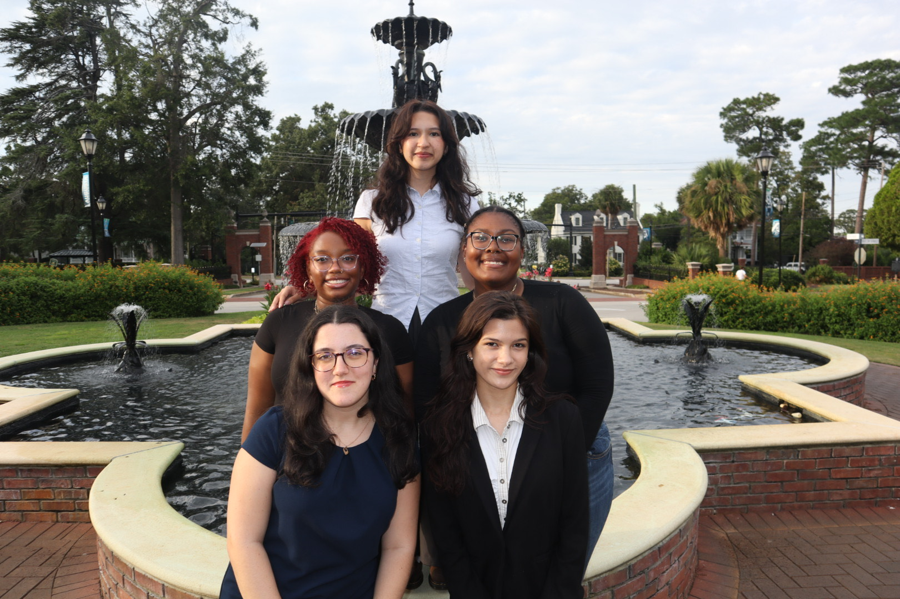
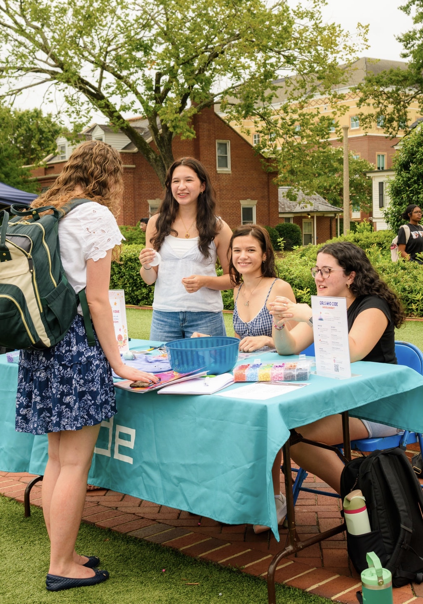
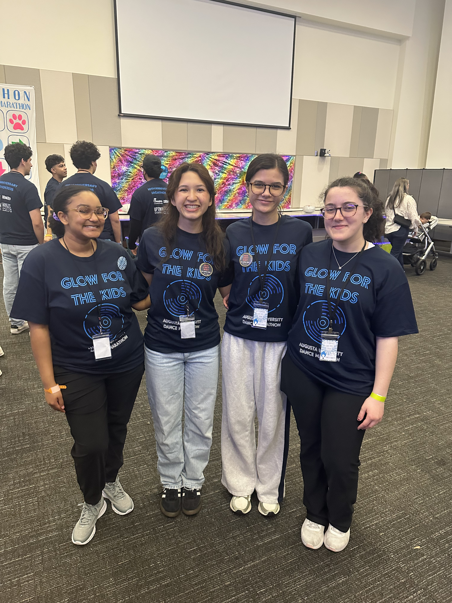
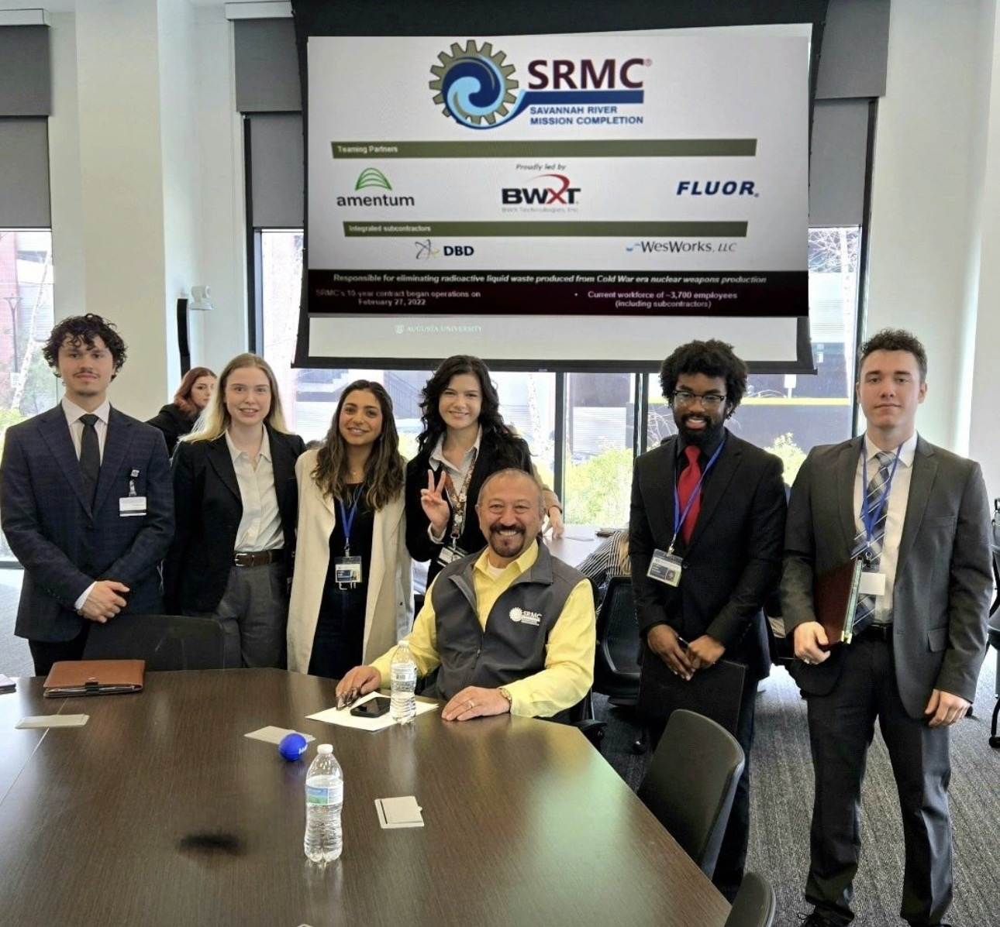

Web Vulnerability Scanner
2026Security · CLI
Modular Python scanner for common web vulnerabilities — open redirects, reflected XSS, SSRF, JWT misconfigurations, sensitive file exposure, and missing security headers.
→ github
is an IT student & cybersecurity enthusiast at Augusta University,
building systems that are secure, functional, and make sense for real people.
VP of Girls Who Code · WiCyS · ACM · ZTA
continuing into Augusta University's MS in Information Security Management
Modular Python scanner for common web vulnerabilities — open redirects, reflected XSS, SSRF, JWT misconfigurations, sensitive file exposure, and missing security headers.
→ githubWatches running processes and fires desktop alerts for suspicious activity — high CPU hogs, memory gluttons, or unknown processes not on your whitelist.
→ githubCozy productivity app with an animated sailor frog mascot. The frog reacts to your session state — focused during work, sipping tea on breaks, cheering on completion.
→ githubA cozy monster cafe terminal game. Serve spooky customers, earn gold, unlock menu items, and survive running a cafe for the undead. Zero external dependencies.
→ githubClassic fantasy roguelike in your terminal. Procedurally generated dungeons, FOV lighting, turn-based combat, 6 enemy types scaling per floor. First Rust project.
→ githubPython script that automatically organizes files into folders by type. Includes user confirmation prompts and built-in error handling to prevent accidental data loss.
→ githubI'm an Information Technology student at Augusta University interested in cybersecurity and the systems that keep technology reliable and secure. I enjoy working at the intersection of design, functionality, and security — where technical solutions still have to make sense for real people.
I'm pursuing a B.S. in IT with a minor in Business Administration and plan to continue into Augusta University's MS in Information Security Management.
Outside of tech: bookwormRead 11 books in a single month one summer., flute player7 years of lessons. Placed 3rd chair in District Band. Reached the second audition round for All-State three times — still haven't cracked it yet 💔, Animal Crossing fisher and bug catcher9 million bells in my ABD. Completed the entire museum in the same save file., and bakerMade ~200 cookies by myself over 2 days for Christmas cookie package deliveries..
A small story behind the name I use across my projects, posts, and creative work.
The name mini tinfish comes from a few small things in my life that ended up meaning a lot to me.
The "tin" comes partly from my dad's old gamer tag, Tinrail, which itself comes from the beginning of our last name, Tyndall. Growing up around that made the name feel special to me, and I liked the idea of carrying a piece of that forward. It also happens to fit another small interest of mine — I have a bit of a fixation on trying and collecting different kinds of gourmet tinned fish, which makes the name feel even more personal.
The "mini" comes from a nickname given to me by a close friend who is about ten years older than I am. She is someone I have always looked up to and who has been like a big sister to me. At one point she jokingly said my Korean name would be Minji, and over time that turned into "mini." The nickname stuck, and it felt right to keep it.
Because of that, both parts of the name quietly honor people who have shaped my life. Mini tinfish is the name I use for the space where I document my journey through technology, learning, creativity, and the things I enjoy along the way.
Relevant completed and in-progress coursework at Augusta University.
Core networking concepts applied to cybersecurity — protocols, vulnerabilities, defense strategies, and hands-on security fundamentals. (CYBR 2600)
Intensive prep course covering CompTIA Security+ exam domains including threats, cryptography, identity management, and risk management. In progress. (CSCI 4950)
Writing scripts to automate system tasks, manage files, and streamline workflows. Focus on practical scripting for real IT environments. (AIST 2120)
Foundational and intermediate programming — data structures, algorithms, OOP, and problem-solving applied across languages. (CSCI 1301 / 1302)
Building dynamic web applications — server-side logic, APIs, and full-stack web development concepts. (CSCI 3600)
Semantic HTML, CSS layouts, responsive design, and JavaScript fundamentals for building accessible, well-structured websites. (AIST 2220)
Database design, SQL querying, data modeling, and analysis techniques for managing information systems. (MINF 2650)
Methodologies for analyzing, designing, and implementing IT systems — requirements gathering, modeling, and documentation. In progress. (AIST 3610)
Project lifecycle, Agile and waterfall methodologies, stakeholder communication, and risk management in IT contexts. (MINF 3625)
Ethical frameworks for technology — privacy, intellectual property, professional responsibility, and the social impact of computing. (CSCI 2700)
Overview of how organizations design, manage, and use information systems to support business and operational goals. In progress. (MINF 3650)
Applied analytics using data to support business decision-making — statistical methods, visualization, and interpretation. (QUAN 3600)
Working as part of the Governance, Risk, and Compliance team supporting the university's cybersecurity and risk management efforts. Conduct security risk reviews evaluating device, system, and process compliance with institutional policies. Assist in deploying phishing simulations and awareness campaigns, and collaborate with IT and departmental stakeholders to document risks and recommend mitigations.
Returning to the Masters Tournament — this time working fleece sales during one of the most prestigious golf events in the world.
Contributed to the organization's digital presence by designing and editing visuals for websites, social media, and marketing materials. Collaborated with senior staff on creative concepts and managed design assets.
Leading technical workshops, coordinating collaborative TryHackMe sessions, and creating opportunities for women in tech. Partnered with the exec board to plan meetings and oversee project execution.
Engaged in philanthropic, academic, and social initiatives promoting leadership and service. Supporting chapter events benefiting breast cancer education and awareness.
Supported front-end operations in a high-volume retail environment during the Masters Tournament. Bagged purchases accurately and delivered customer service under pressure.
Providing prompt, friendly service in a fast-paced environment while collaborating closely with kitchen staff to ensure timely and accurate orders.
Minor in Business Administration. Fall 2025 President's List (4.0 GPA). Fall 2023 & Summer 2025 Dean's List. Member of WiCyS, ACM Cybersecurity Branch, Girls Who Code, and Zeta Tau Alpha.
Photos from competitions, performances, and events along the way.
First time competing at NCAE. Our team placed 3rd in Southeast Region 1, and I was voted MVP by my teammates.

The Fall 2025 exec board for Girls Who Code at Augusta University.

Recruiting at Club Fest with the exec board to get people excited about our first meeting of the semester.

Girls Who Code and Women in CyberSecurity teamed up for Jagathon, a fundraiser for the children's hospital in Georgia hosted by Jaguar Miracle. We raised $306.

Augusta University's SCCS first-ever employer breakfast. Gained hands-on experience delivering elevator pitches to industry professionals.

Performed with Augusta University's Wind Ensemble — continuing my passion for flute and piccolo after 7 years of lessons.
I'm open to internships, research collaborations, and community projects.
Best way to reach me is email or LinkedIn.